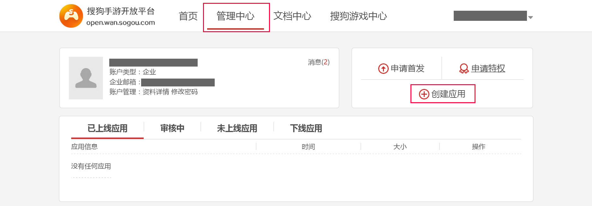
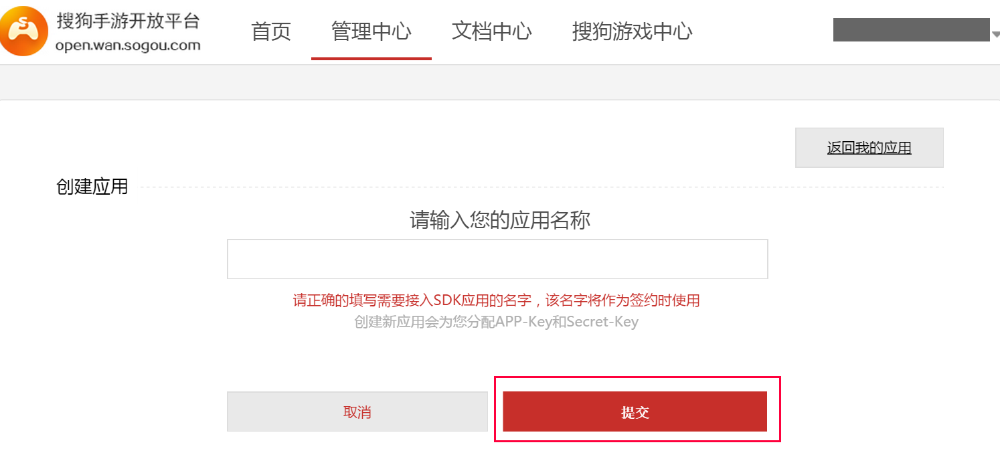

搜狗官方后台地址：http://open.wan.sogou.com/
西瓜SDK所需的参数 AppID、App_Key、app_secret、pay_key 均在搜狗后台获取。
获取参数步骤： 1. 注册开发者账号；
2. 登录搜狗渠道后台，进入“管理中心”页面，点击“创建应用”；

3. 填写游戏相关信息并提交；

4. 在“管理中心”查看获取到的参数AppID、App_Key、app_secret、pay_key。